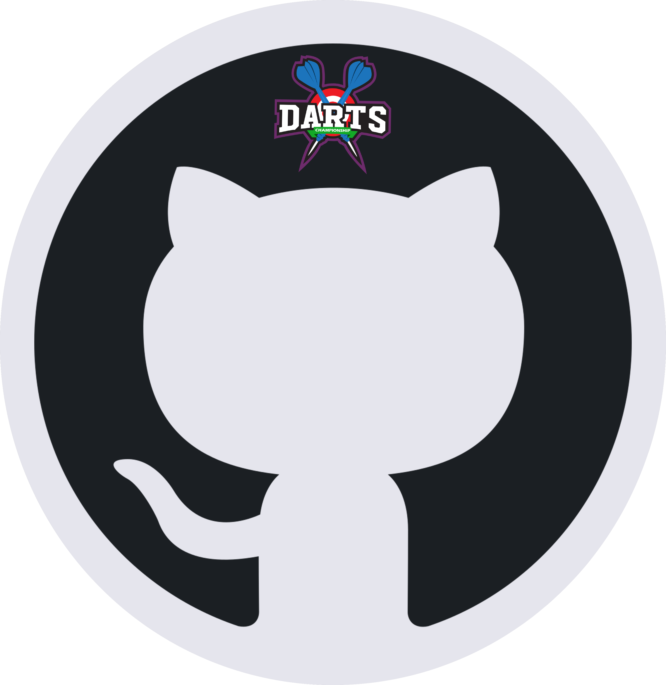

Projets

dossier technique

Le système DARTS est un système numérique permettant de jouer au jeu de fléchettes électroniques. Le joueur peut lancer une partie avec les différentes configurations qu’il souhaite.
Les joueurs peuvent visualiser en “temps réel” l’impact des fléchettes sur la cible, les scores, les moyennes des volées mais aussi les solutions pour finir la partie.